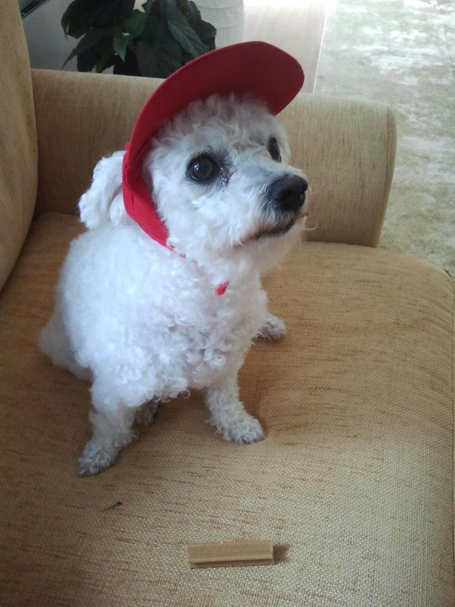

Ella "Jitterbop Whoopde Do"
26.07.2002-28.11.2014
Ella oli Paulan ensimmäinen koira.
Ella syntyi 26.07.2002 ja pentueeseen kuului myös kaksi veljeä ja kaksi siskoa. Ella kävi nuorena näyttelyissä ja pärjäsikin niissä. Kiistattomasti kuitenkin hienoin Ellan tulos oli 11vuotiaana kun Ella sai Viron veteraanimuotovalio tittelin. Ella sai 3 pentuetta, joista ensimmäinen syntyi 01.12.2003 ja pentueeseen syntyi narttu ja kaksi urosta. Toisen pentueen Ella sai 17.08.2006, kaksi narttua ja kaksi urosta. Ellan viimeinen pentue syntyi 31.10.2007 ja Ella sai kaksi narttua ja uroksen.
 Ella oli hieman isompi, kuin rotumääritelmän mukainen narttu, painaen n. 5,7kg. Tästä huolimatta Ella pärjäsi näyttelyissä ja oli kaunis ja suloinen koira. Ellan pennut ovat myös pärjänneet erinomaisesti näyttelyissä. Ensimmäisen pentueen toinen uros on Kansainvälinen muotovalio, Suomen muotovalio, Viron sekä Latvian muotovalio sekä Pohjoismaiden juniorivoittaja 2005. Tämän veli on Saksan muotovalio ja Saksan juniorimuotovalio. Toisen pentueen toinen nartuista on Suomen, Tanskan ja Liettuan muotovalio. Myös viimeisen pentueen toinen narttu on pärjännyt hienosti ja omistaa Suomen ja Viron muotovalio sekä Juniori Voittaja 2008 tittelit.
Ella oli äärettömän viisas, kiltti, ovela ja kaikkia rakastava koira. Ella vilpittömästi rakasti kaikkia ja oli onnellisimmillaan oman perheen läsnä. Ellalle riitti yhdessä olo perheen kanssa, mutta tennispallojen perässä oli mahtava juosta. Ellaa kiinnosti kovasti myös fasaanit ja fasaanien takaa ajaminen. Rusakoita ja oravia unohtamatta. Ella myös piippasi. Ella käytti surutta ääntään jos oli eri mieltä asioista tai oli tylsistynyt. Ella oli erittäin ovela ja osasi käyttää sitä myös kiellettyihin asioihin; Ella oli taitava kiipeämään ruokapöydälle syömään sinne unohtuneita herkkuja. Ella osasi myös avata esimerkiksi kaappien ovia, jos roskakoriin oli mennyt jotain Ellan mielestä syömäkelpoista. Ella ei kuitenkaan koskaan tuhonnut mitään ja oli aina ihmisille kiltti ja lempeä. Ella olikin taitava lasten kanssa ja vielä taitavempi pentujen kanssa. Ellaa käytettiin varaäitinä pennuille, jos pentueen oma äiti ei esimerkiksi hoitanut pentuetta tarpeeksi hyvin.
Ella jätti jälkensä moneen puhtaalla pyyteettömyydellään ja kyvyllään rakastaa kaikkia. Ellaa oli vaikea, oikeastaan mahdoton olla rakastamatta takaisin.